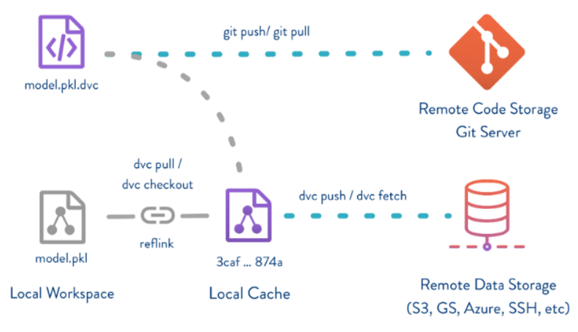

个人简介： wedo实验君, 数据分析师；热爱生活，热爱写作
对于传统的软件工程项目(比如java, web), git是一个非常不错的代码版本管理工具。但是人工智能项目，如机器学习或者深度学习，和传统软件工程项目有一定的差别
如上所述，这些差别，git存在一定不足
是时候祭出DVC， data version control，数据版本管理工具。

dvc即data version control, 是一种针对人工智能项目（机器学习或者深度学习）的数据版本管理工具。DVC的操作和GIT类似，可以认为为GIT的二次开发封装。结合GIT，DVC可以有效的管理人工智能项目的整个流程，包括代码，数据，训练配置，模型。
GIT和DVC分工如下：
pip install dvc
# 到git目录下
git config --global user.name "xxxx"
git config --global user.email "xxxx@wedo.com"
git clone ssh://git@101.81.238.21/test/test.git
cd test/
# dvc 初始化
dvc init
# 将dvc 初始化的文件提交 git
git commit -m "Initialize DVC"
# 初始化后会在项目目录下生成.dvc文件夹，存储dvc相关的信息
.dvc
├── config
├── plots
│ ├── confusion.json
│ ├── default.json
│ ├── scatter.json
│ └── smooth.json
└── tmp
└── index
可以通过dvc add/git add将数据和模型添加到版本管理中
# 假设数据在arch_train/model_zoo/nsfw_online_err.zip
dvc add arch_train/model_zoo/nsfw_online_err.zip
git add arch_train/model_zoo/.gitignore arch_train/model_zoo/nsfw_online_err.zip.dvc
# .dvc 后缀为数据的元数据文件，默认为存储路径为.dvc/cache下
cat arch_train/model_zoo/nsfw_online_err.zip.dvc
outs:
- md5: 26eb560df48bf11ddf303135749b0c60
path: nsfw_online_err.zip
.
├── cache
│ └── 26
│ └── eb560df48bf11ddf303135749b0c60
可以配合git的分支管理，来获取分支下不同的数据和模型。
# 切换分支
git checkout 分支名
# dvc通过git中的.dvc 文件，切换这个分支下数据
dvc checkout
当多人开发时，dvc push会根据config中的远程主机配置，将数据push到远程主机。远程主机可以是ssh，http还有云盘存储等。
# 建立 远程服务 ssh或者http
# 这里以本地的其他目录为例子
mkdir -p /tmp/dvc-storage
dvc remote add -d myremote /tmp/dvc-storage
git commit .dvc/config -m "Configure local remote"
# 新建后 就会在`.dvc/config`存储远程主机访问的方式
vim config
[core]
remote = myremote
['remote "myremote"']
url = /tmp/dvc-storage
# dvc push 上传数据
dvc push
# 远程主机中数据是上传的一个备份
tree /tmp/dvc-storage/
/tmp/dvc-storage/
└── 26
└── eb560df48bf11ddf303135749b0c60
1 directory, 1 file
ls -l /tmp/dvc-storage/26
total 93400
-r--r--r-- 1 root root 95640298 Sep 4 13:44 eb560df48bf11ddf303135749b0c60
ls -lh /tmp/dvc-storage/26
total 92M
-r--r--r-- 1 root root 92M Sep 4 13:44 eb560df48bf11ddf303135749b0c60
如果数据变更，同样dvc+git进行版本管理
# 数据变化
dvc add arch_train/model_zoo/nsfw_online_err.zip
git commit arch_train/model_zoo/.gitignore arch_train/model_zoo/nsfw_online_err.zip.dvc -m "Dataset updates"
dvc push
当其他人想使用共享代码和数据时 git clone + dvc pull
# 下载代码和数据.dvc
git clone ssh://git@101.81.238.21/test/test.git
cd test/
# 根据.dvc和config远程主机配置，下载对应的数据和模型
dvc pull
3.2中已经介绍了dvc的最常用的操作，可以看出操作和git的操作基本上吻合的，原理上可以和git对等。
可以通过dvc run来建立训练和评估过程的依赖关系，即将输入的数据，预训练的模型，配置和输出的模型和训练脚本关联起来，可以很方面追溯执行过程， 每次关联dvc都会生成一个yaml配置来描述这个关联性。
dvc run的主要参数
-n 操作的名称-p 配置，可以是多个，文件或者文件夹-d 操作依赖的数据，脚本和模型等，可以是多个，文件或者文件夹-o 操作的输出，可以是多个，文件或者文件夹dvc run -n prepare \
-p prepare.seed,prepare.split \
-d src/prepare.py -d data/data.xml \
-o data/prepared \
python src/prepare.py data/data.xml
dvc把数据、模型、算法脚本和Metrics当成一次代码checkout，配合git就可以很方面的管理每一次训练的所有环节，还可以通过dvc metrics show -T来比较不同版本的模型性能。更多详细的dvc功能参见https://dvc.org/doc/start；欢迎交流讨论。
总结如下